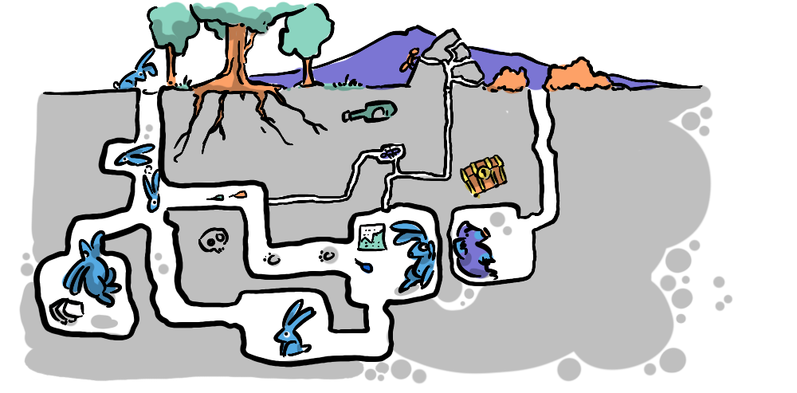
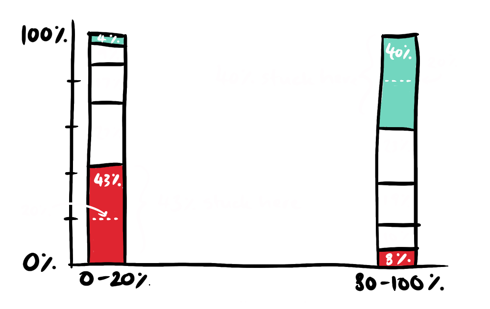
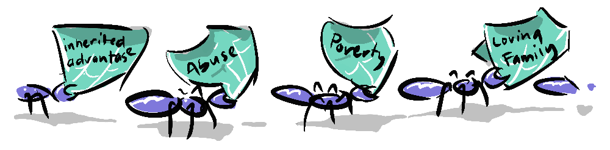
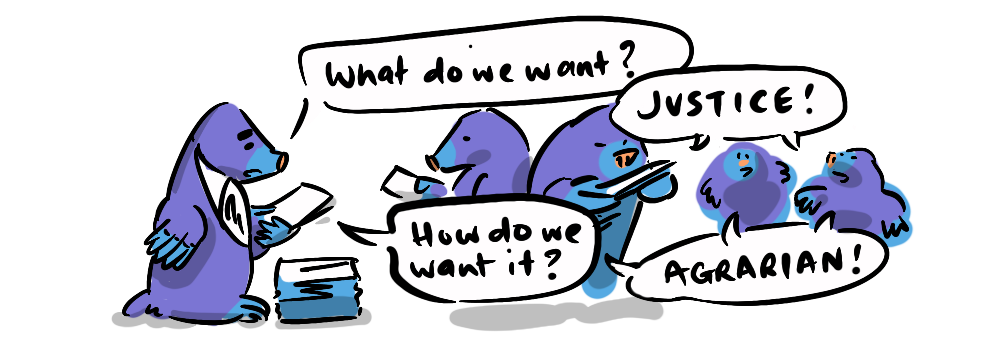

I've been labouring over this post for a while, following rabbit holes, building multi-faceted mental models, making associations with other posts on the site. But to be honest, the idea I want to express is a simple one.

John Rawls' model of the "Veil of Ignorance" asks us to consider what sort of world we would like to live in if we had no control over who we were in that society, what financial position we're born into, our ethnicity, country of origin, our IQ, or how much our parents wanted or loved us, or how much value they could bestow upon us.
I've explored this concept through a game called "The Veil", and if you're so inclined, you are free to abandon reading this post and play the game right now. But if you, like me, are in a country looking towards an election this year, you might want to read on, and perhaps see your vote differently.
If you've had a play, you might have noticed some potential biases in the outcomes, I'd like to assure you this is not the case, I have no biases... but essentially, if you make choices differently to the way I would, you will end up in your own unique hell, which is entirely jusified.
The Veil came about as a response to a trend I saw among people similarly situated to me (middle-class liberal thinkers) towards libertarian political ideals, without seeming to realise that libertarian (socially liberal yet economically right-wing) policies have dire consequences regarding social mobility for those less fortunate (fortunes being determined largely by an accident of birth).
This tendency, for otherwise compassionate people, to hold selfish political views is, to my mind, an unintended outcome of the double-edged sword of democracy, which is why I think the Veil of Ignorance is so important.
"Democracy is the worst form of government, except for all the others that have been tried"
—Winston Churchill (1947 Speech in the House of Commons)
Despite the
There is a problem with democracy though. Because it allows for selfish motivations, democracy can, in practice, justify such motivations, even leading us to believe it is our duty to act selfishly, abstaining from the better angels of our nature; extended empathy, positive reciprocity and our feelings of responsibility to life on earth as a whole.
Selfish motivations wouldn't be such an issue if all of us could act on a sense of enlightened self-interest, with a clear view of the long-term or
In political terms we see this when people, struggling to make ends meet, vote for aspirational individualistic candidates that preach personal reliance. Those candidates then employ corresponding policies—tax cuts, deregulation, deprioritising indigenous and minority rights and environmental protections, decrying the "nanny state"—which result in decreased social mobility, making it more difficult for those individualistic aspirations to be achieved for the majority of the population.

Faiza Shaheen in Capital in the Twenty-First Century describes these voters as "millionaires in waiting", voting in the hope that they will one day benefit from millionaire-friendly policies, while simultaneously making it less likely for them to become millionaires themselves. Shaheen is echoing the words of John Steinbeck in his 1960 Esquire article "A Primer on the '30s" about why socialist ideas were resisted in the US.
"I guess the trouble was that we didn't have any self-admitted proletarians. Everyone was a temporarily embarrassed capitalist."
—John Steinbeck
What gets me is the idea that people, hoping to be millionaires, assume that when they become millionaires they will be solely concerned with hoarding their wealth, and not contributing to societal health through taxes or caring for the rights of minorities or the environment. Unfortunately they're probably right—there's a strange scarcity mindset that apparently extends even to those who are financially flourishing. Myself, I don't get it—what's the point in being rich if it results in being even more paranoid about your finances?
The other idea is the zero-sum idea that it all equals out in the end and that parties are basically just shifting deck chairs on the Titanic, so let's go with the side offering change, or offering me money (tax-breaks) in my pocket tomorrow. The problem with this idea is it fails to understand just how unequal tax-breaks are, and that you won't somehow get your share because it all equals out in the end. This is because, in an unequal system, greater individual autonomy empowers those with money to keep it more effectively—that's the nature of inequality, it doesn't equal out.
Employing Rawlsian logic when voting, leads us to question how much we actually need our individual vote, and how much our vote would mean to someone else. This is especially important when thinking about

The other thing I realise when you put myself in the position of someone in the bottom 10% is just how more motivated I would be to become a productive member of society if I wasn't absolutely desperate, how much less likely I would be to turn to anti-social or criminal behaviour.
And the mirror of this; if people are adequately supported and you turn out to be in the top 1%, you'll still be rich relative to the rest of the population, but you'll also be surrounded by people who are able to live their best lives, and you won't have to worry about your safety walking down the street, because there will be no motivation for violence.

Democracy gives us permission to be selfish, but it doesn't obligate us to be short-sighted. The veil of ignorance is a way of correcting that tendency. It asks a simple question: would you still vote this way if you had to live with the consequences from any position in society?
If the answer is no, then your vote is contingent on luck.
The rational move is to favour systems that protect you at your worst, not just reward you at your best. That means backing structures that preserve dignity, mobility, and security across the whole distribution, not just at the top. Seen this way, voting is less about expressing who you are today, and more about choosing the rules of a game were you forced to play from any starting point—shifting it from a zero-sum scramble for advantage, to a non-zero-sum design problem about what kind of society is most fair.
Another interactive that illustrates the Veil of Ignorance, this time on a global scale, is Giving What We Can's Birth Lottery comparing your current birth country with another country of origin you might have been born in, given random chance. It highlights how lucky those of us in wealthy democracies are and how an accident of birth determines the scope of the most important quality of life metrics; life expectancy, child mortality, median income, years of schooling, passport power and democratic freedom. I recommend giving it a go, and learning more about Giving What We Can.